Detailed Projects
Modular Robotic Cartridge Packaging Tool
July - August 2026
Project Overview: Created a robotic solution to package bullet cartridges ranging from .22 to .408 size in a grid pattern in 4 different sized retail boxes, while avoiding scratches on parts.
Contributions:
- Designed, iterated, and manufactured EOAT to:
- Stage singulated cartridges in a variable-size holding ramp, then release in rows of 5 into gridded containers
- Avoid gripping parts to minimize scratching
- Developed modular part interface with quick-release to swap between container sizes
Tools Used: SolidWorks, Ultimaker 3D Printers, Denso SCARA Robot
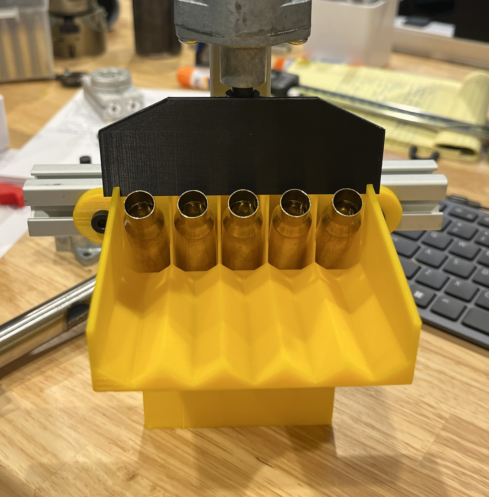
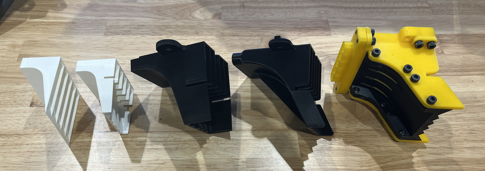

Robotic Bin-Picking & Drill Press Tending Cell
May - July 2026
Project Overview: Created a robotic cell to retrieve cast steel rail clips from a large bin and fixture them under a drill press, reducing ergonomic strain on the drill press operator.
Contributions:
- Integrated a FANUC CRX-20 with Apera AI vision to bin-pick parts
- Designed and implemented pneumatic rotary table to flip part if optimal pick is impossible
- Designed and manufactured a pneumatic vise with embedded magnets to position part repeatably after picking
- Implemented pose-checking algorithms to correct for imprecise part position from electromagnetic picking
Tools Used: SolidWorks, Ultimaker 3D Printers, FANUC CRX-20

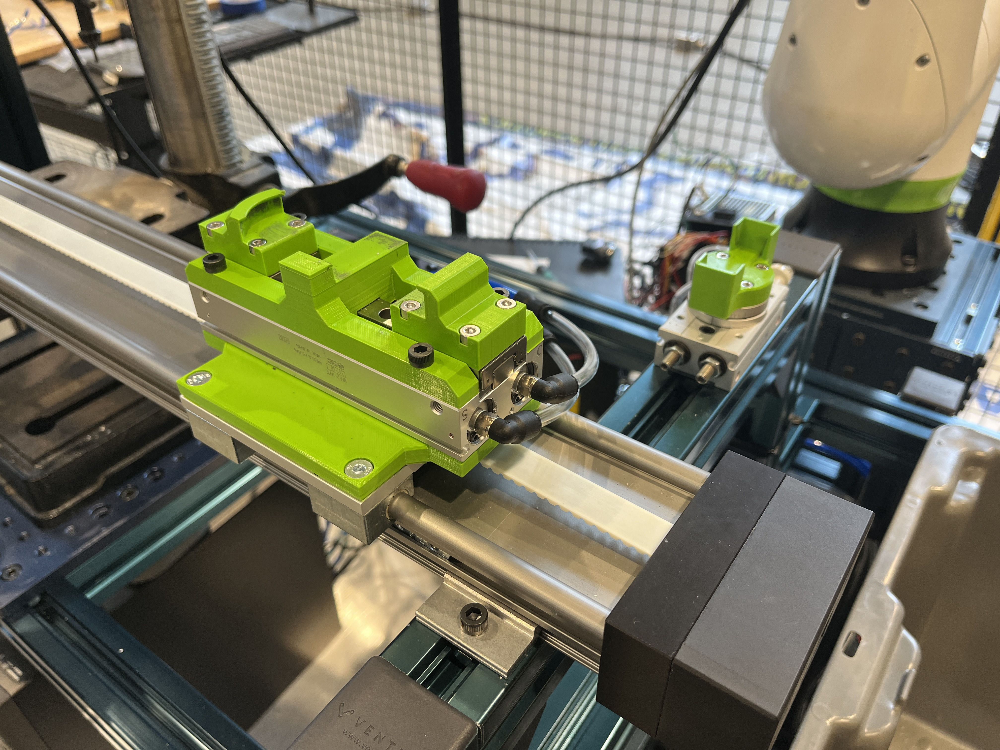
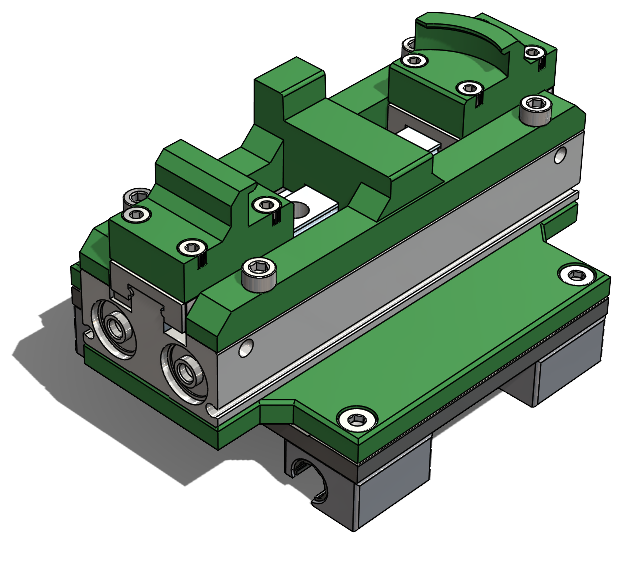
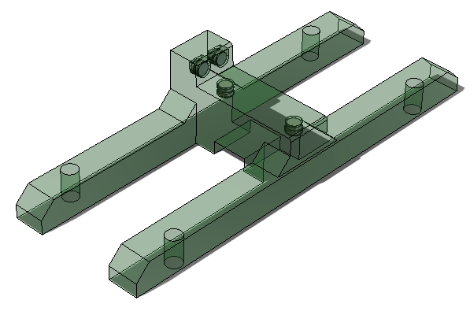
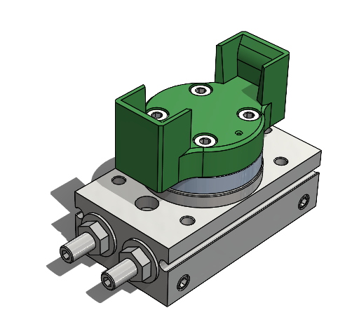
ME 2110 Competition Robot
September - November 2025
Project Overview: Created a robotic system to compete in an arena-style competition.
Contributions:
- Designed/fabricated telescoping arm to extend robot height 2.5x
- Created scissor-linkage arms to sweep game pieces to target
- Integrated teammates' subsystems with main robot chassis
- Programmed state machine logic and robot program flow
Tools Used: SolidWorks, Bambu Labs 3D Printers, Laser Cutters, Arduino/C++
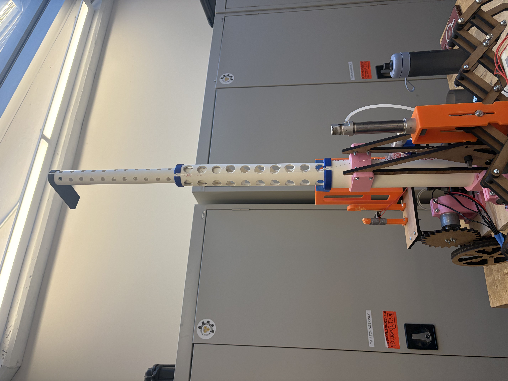
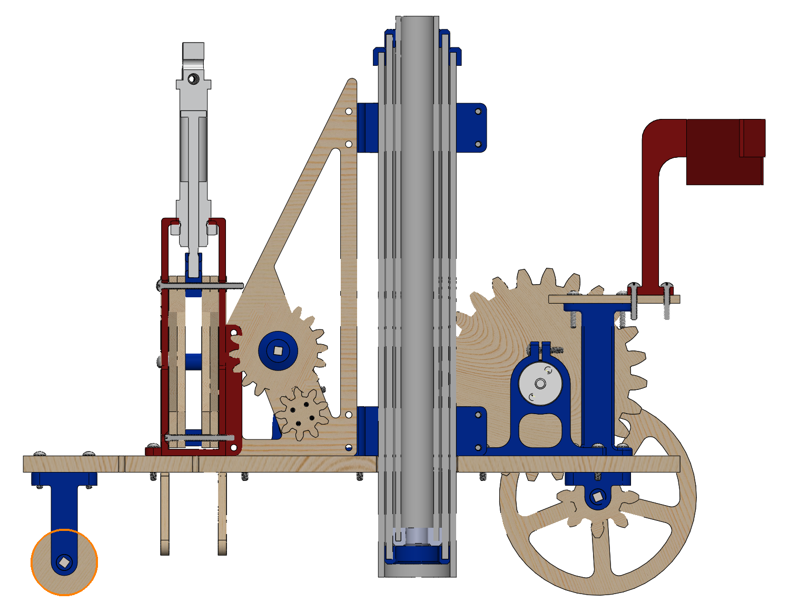
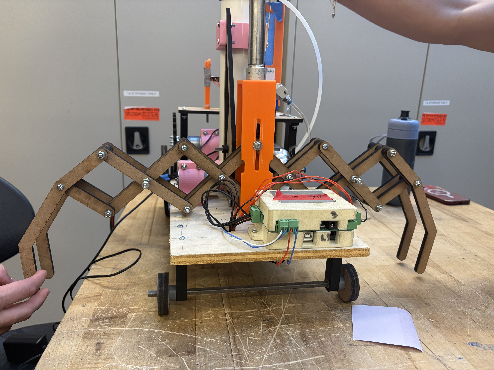
Cosmic Constructors
September - December 2024
Project Overview: In a team of 5, modeled a concept for a robot to place pipes and other structural elements in space. The concept places pipes end-to-end and walks along previous construction.
Contributions:
- Modeled hopper-feeder assembly that ejects pipes one at a time to be placed by placer arm
- Modeled robot chassis to integrate with teammates' models
- Created renderings using SolidWorks Visualize of final assembly
Tools Used: SolidWorks, SolidWorks Visualize

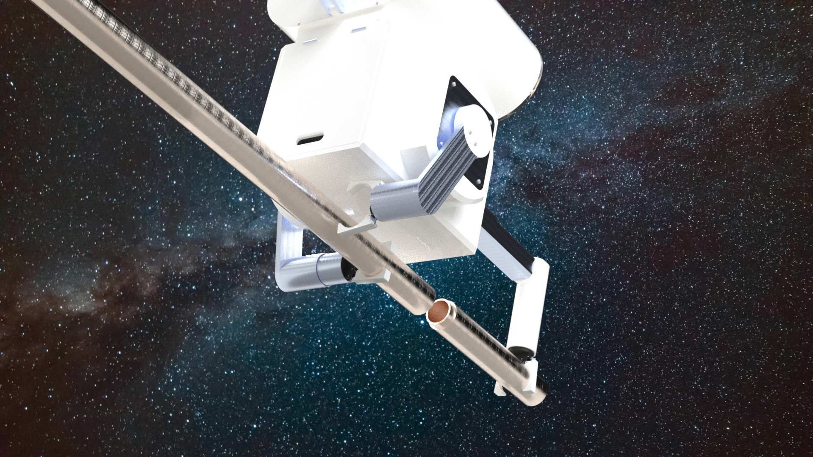
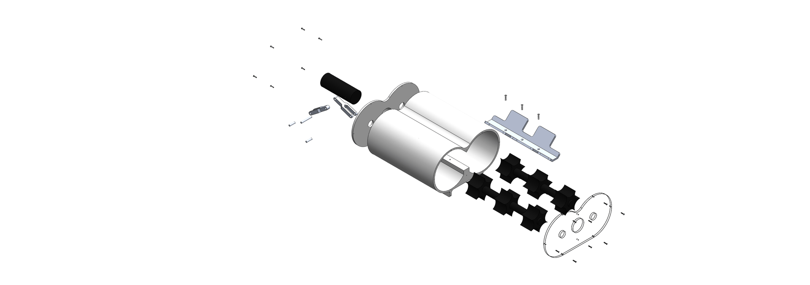
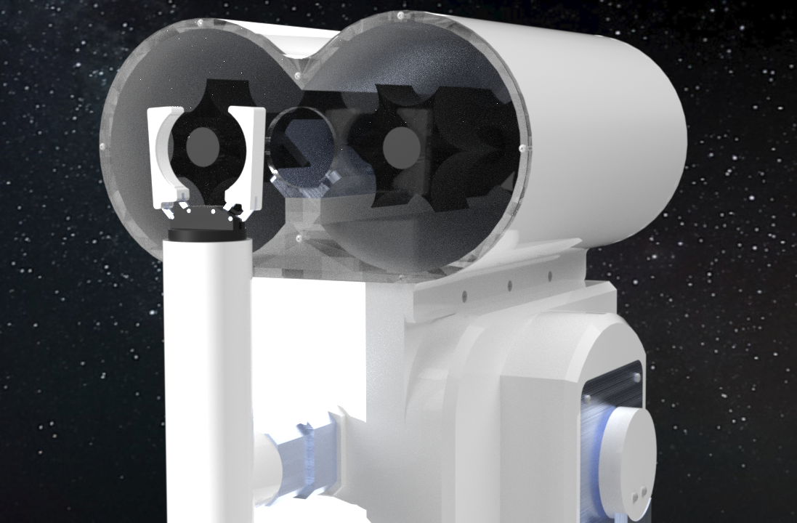
OctoGifts
January 2019 - December 2021
Project Overview: OctoGifts was an e-commerce business I ran from 2019 to 2021, selling paper candy dispensers I designed and packaged in DIY kits. These machines doubled as greeting cards with a space on the back for a message.
Patents:
- "Apparatus for Dispensing Objects and Method." Flores, S. US Patent No. US 11,254,486 B2, issued February 22, 2022.
- "Object Dispenser." Flores, S. US Patent No. US D923,419 S, issued June 29, 2021.

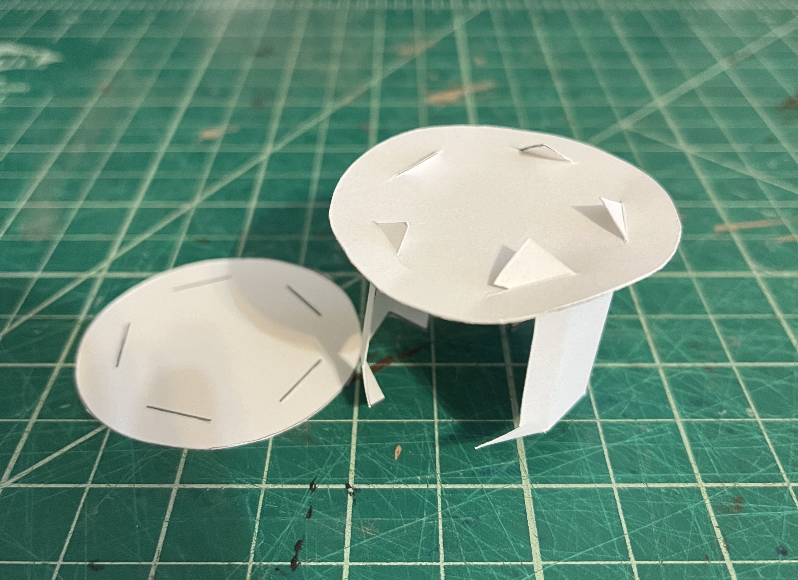
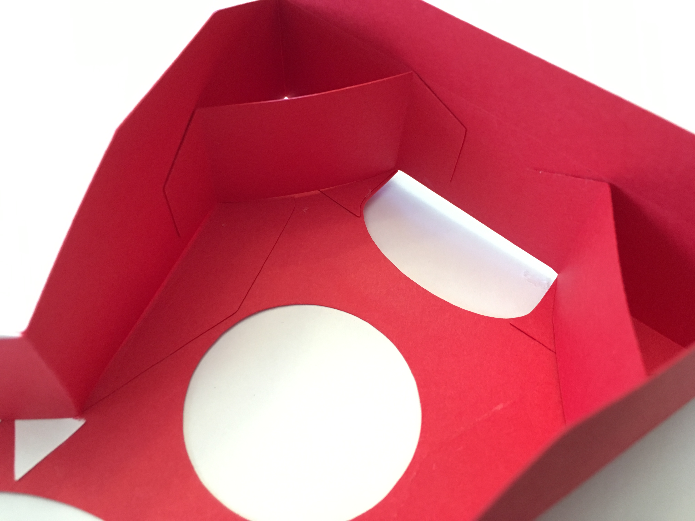
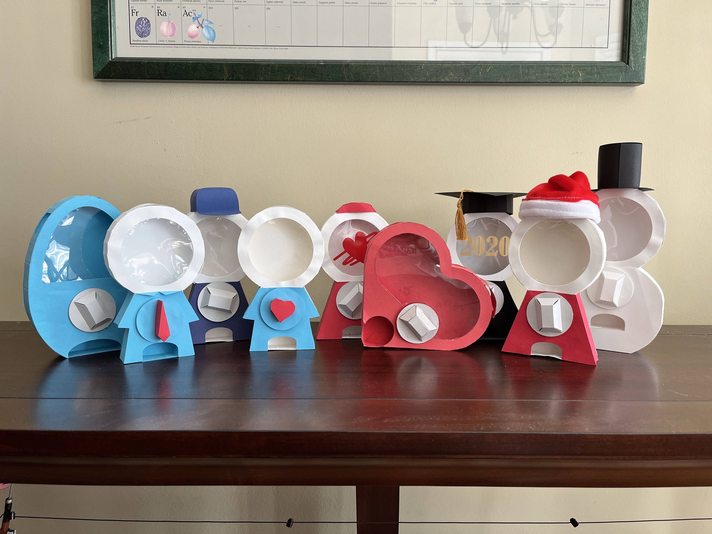